Arquitectura Maestra basada en 2 Sistemas weBoost Office 200 LATAM (50 Ω) y 4 Antenas Domo Interiores para iluminar el 100% del Zócalo Subterráneo (Nivel -1) y el Óvalo del Alcalde / Sala de Concejo Municipal (Nivel 1).
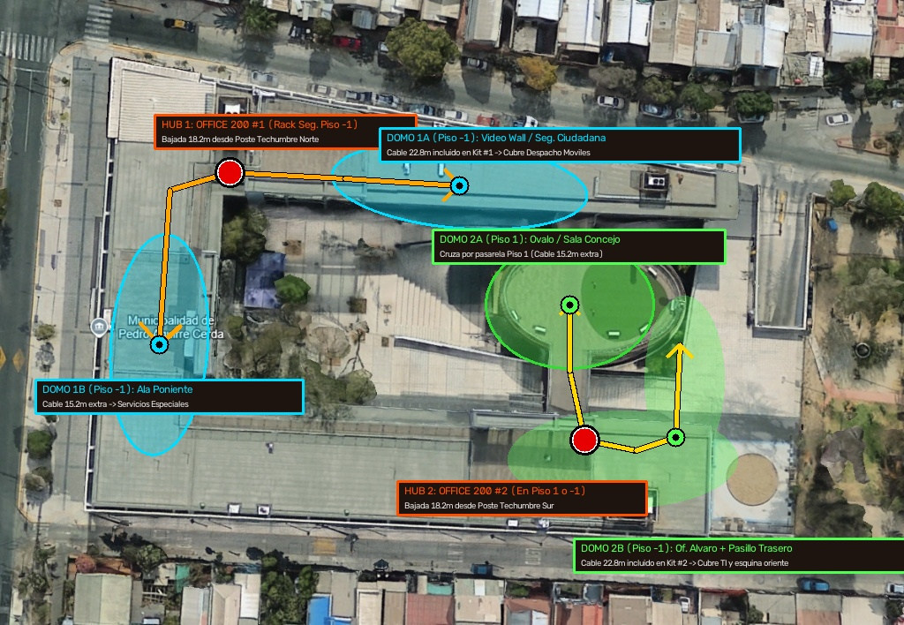
3,5 m de altura, ideales para instalar las 2 antenas donantes omnidireccionales.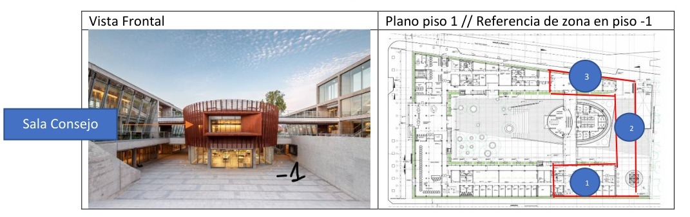
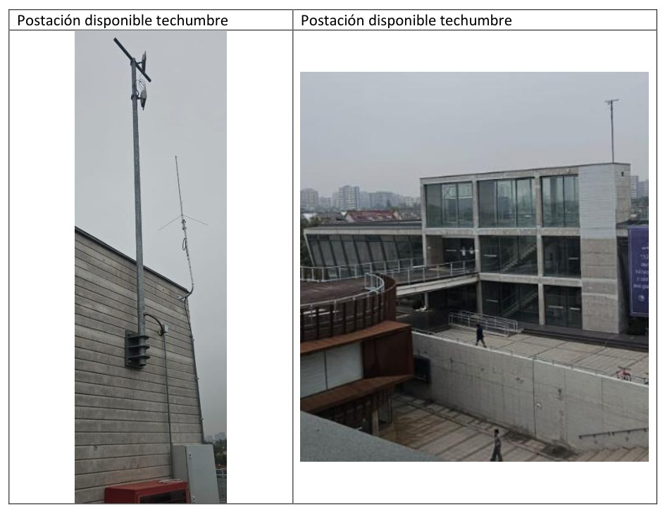
3,5 metros en ambos extremos de la techumbre para fijación de antenas donantes exteriores.
El siguiente corte transversal muestra exactamente por dónde baja el cable coaxial de baja pérdida desde los postes existentes en la techumbre, dónde se alojan los amplificadores y splitters dentro de los racks municipales, y cómo se distribuye el cableado por el cielo falso hacia las antenas domo interiores en el Piso 1 (Sala de Concejo) y Piso -1 (Subterráneo):
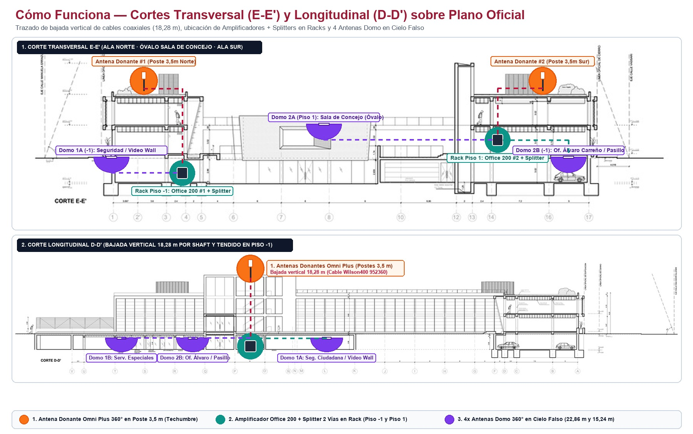
3,5 m en Techumbre (círculos naranjas), bajada vertical de 18,28 m por shaft hacia los Racks (círculos turquesa) y tendido por cielo falso hacia los 4 Domos Interiores (semiesferas moradas).
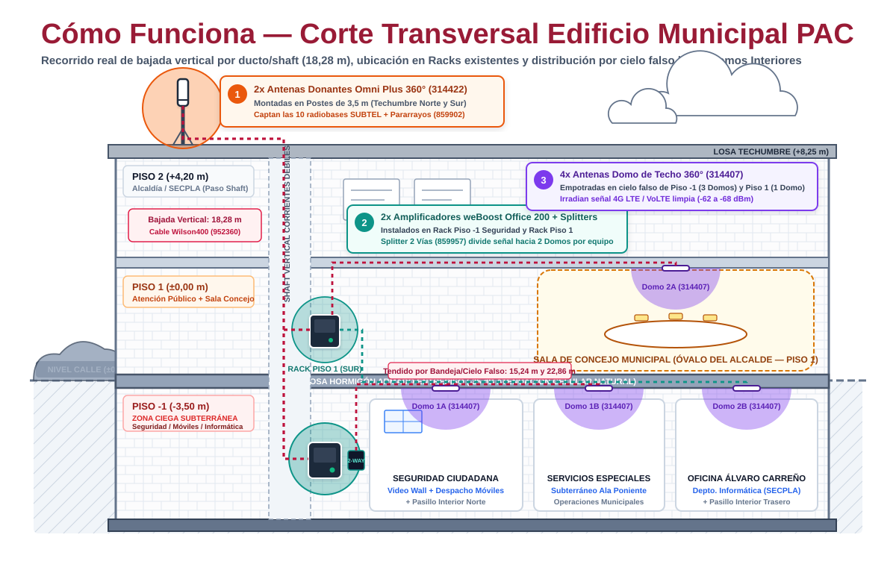
3,5 m · 2) Amplificador + Splitter en Rack · 3) 4 Antenas Domo en Cielo Falso.
314422) en los postes metálicos existentes en los extremos Norte y Sur de la cubierta, protegidas con pararrayos coaxial (859902).18,28 m SKU 952360): El cable coaxial Wilson400 baja verticalmente por el shaft de corrientes débiles atravesando el Piso 2 hasta llegar a los racks existentes sin cableado a la vista.859957).859957).314407): Desde cada Splitter salen 2 cables coaxiales (22,86 m y 15,24 m) sobre la bandeja del cielo falso, empotrando las antenas tipo platillo blanco en el techo de Seguridad Ciudadana / Video Wall / Despacho Móviles, Servicios Especiales, Sala de Concejo Municipal (Óvalo Piso 1) y Oficina Álvaro Carreño / Pasillo Interior Trasero.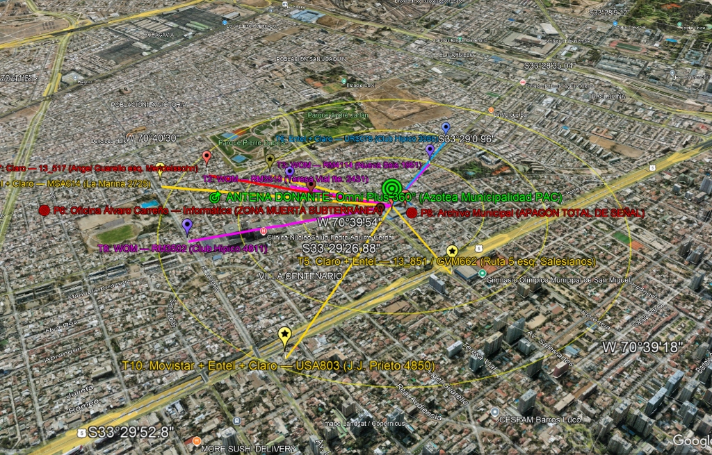
T1 a T10) sobre la Antena Donante Omni Plus 360° en la azotea del Centro Consistorial PAC (Haz clic para ampliar).
T1 a T10) de Entel, Movistar, Claro y WOM transmitiendo en las bandas B2 (1900 MHz), B4 AWS (1700/2100 MHz) y B5 (850 MHz).-66 a -72 dBm): A +11,75 m de altura (losa de techo + poste de 3,5 m), la señal exterior de las 4 compañías llega con excelente potencia y calidad (RSRP/SINR óptimo).T2, T3, T6 (WOM, Entel, Claro en Teresa Vial / Club Hípico).T7, T8 (Claro, WOM en Av. La Feria / La Marina).T5, T10 (Movistar, Entel, Claro en J.J. Prieto / Salesianos).314422) capta los 360 grados simultáneamente, garantizando cobertura multi-operador real para funcionarios y vecinos.35 dB la onda electromagnética, cayendo a zona muerta (-108 a -115 dBm).
Debido a las dimensiones de la planta en "U" (más de 85 metros de desarrollo lineal) y a las divisiones interiores de hormigón, un solo amplificador no logra cubrir simultáneamente ambas alas y el Óvalo del Alcalde sin exceder las tiradas máximas de cable coaxial de baja pérdida. Se diseña una arquitectura simétrica de 2 sistemas independientes weBoost Office 200 LATAM (50 Ω), cada uno dividido en 2 antenas interiores mediante un Splitter Pasivo de 2 Vías (-3 dB):
314422): Instalada en el poste de 3,5 m de la Techumbre Norte, con protector de sobretensión (859902) y bajada vertical de 18,28 m (cable 952360 incluido) hacia el Rack Dirección de Seguridad (Piso -1).859957):
22,86 m (952375) avanzando hacia el oriente por el pasillo norte para iluminar Video Wall, Seguridad Ciudadana y Despacho de Móviles.15,24 m (952350) hacia el sur para iluminar Servicios Especiales.314422): Instalada en el poste de 3,5 m de la Techumbre Sur, con bajada vertical de 18,28 m (cable 952360 incluido) hasta el Rack Piso 1 / Shaft Sur (frente al puente del Óvalo).859957):
15,24 m (952350) cruzando la pasarela peatonal del Piso 1 hacia el centro de la Sala de Concejo Municipal.22,86 m (952375) bajando al Piso -1 para cubrir la Oficina de Álvaro Carreño (TI) y el Pasillo Trasero Oriente.| Sistema / Rama | Recinto Cubierto | Nivel | Cable Coaxial Indoor | Pérdida Splitter + Cable (1900 MHz) | Potencia Efectiva en Antena Domo | Radio Cobertura Indoor |
|---|---|---|---|---|---|---|
| Sistema 1 · Domo 1A | Video Wall, Seguridad Ciudadana y Despacho Móviles | Piso -1 | 22,86 m (SKU 952375 incluido) |
-3,2 dB (Splitter) -4,3 dB (Cable) |
+14,5 dBm Downlink (+66,5 dB ganancia neta) | 12 a 15 m lineales |
| Sistema 1 · Domo 1B | Servicios Especiales (Ala Poniente) | Piso -1 | 15,24 m (SKU 952350 adicional) |
-3,2 dB (Splitter) -2,9 dB (Cable) |
+15,9 dBm Downlink (+67,9 dB ganancia neta) | 12 a 15 m lineales |
| Sistema 2 · Domo 2A | Óvalo del Alcalde / Sala de Concejo Municipal | Piso 1 | 15,24 m (SKU 952350 adicional) |
-3,2 dB (Splitter) -2,9 dB (Cable) |
+15,9 dBm Downlink (Planta libre ovalada) | 100% Sala Concejo |
| Sistema 2 · Domo 2B | Oficina Álvaro Carreño (Informática) y Pasillo Trasero | Piso -1 | 22,86 m (SKU 952375 incluido) |
-3,2 dB (Splitter) -4,3 dB (Cable) |
+14,5 dBm Downlink (+66,5 dB ganancia neta) | 12 a 15 m lineales |
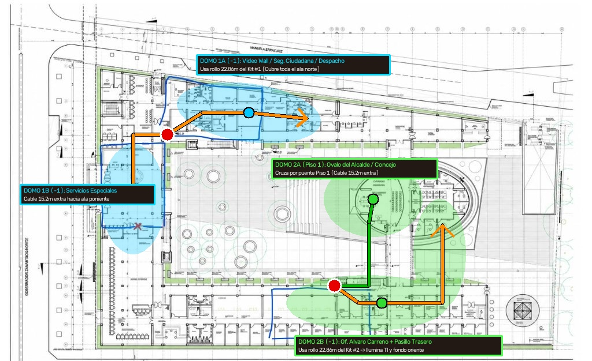
Wilson400 de 22,86 m y 15,24 m cubriendo Piso -1 y el Óvalo en Piso 1.
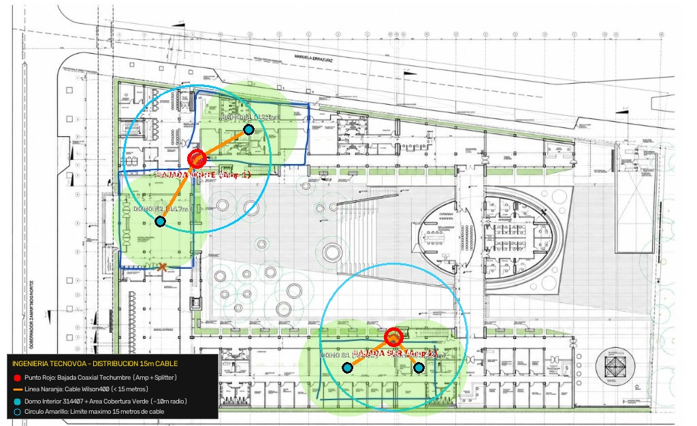
6,0 m entre ejes para los tramos de 15,24 m (50 ft).
6,00 metros entre ejes. Cada rollo de 15,24 m (50 ft) permite absorber ~2,5 m de holgura vertical en cielo falso más 12,5 m de recorrido horizontal efectivo.22,86 m (75 ft): Cada kit weBoost Office 200 ya incluye de fábrica un rollo de 22,86 m. Estos dos rollos largos se destinan a los dos pasillos más extensos (Video Wall / Despacho de Móviles en el Norte y Oficina de Álvaro Carreño + Pasillo Trasero en el Sur-Oriente).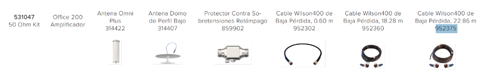
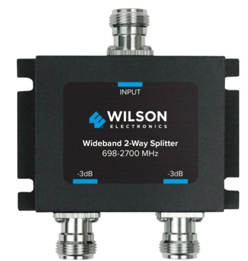
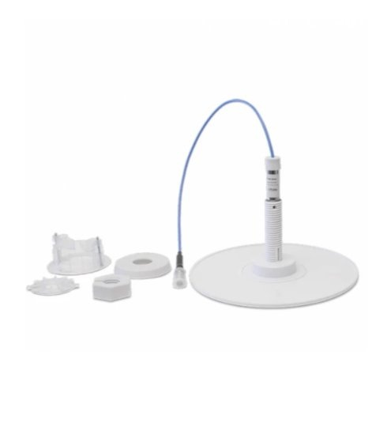
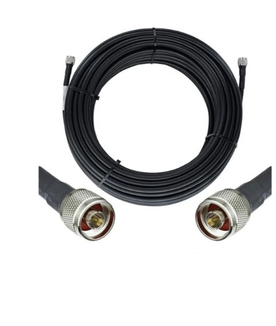
| Ítem | SKU / N° Parte | Componente / Descripción Técnica | Cant. (1 Ala) | Cant. (Solución Total 2 Alas) | Ubicación / Función en Proyecto |
|---|---|---|---|---|---|
| 01 | 531047 |
Kit Amplificador Celular weBoost Office 200 LATAM (50 Ω) Incluye: 1 Amplificador 74 dB, 1 Antena Exterior Omni Plus (314422), 1 Antena Interior Domo (314407), 1 Protector Rayos (859902), 1 Jumper 0,60 m (952302), 1 Cable 18,28 m (952360) y 1 Cable 22,86 m (952375). |
1 Kit | 2 Kits | Hub Norte (Rack Seguridad -1) y Hub Sur (Rack Piso 1 / -1) |
| 02 | 859957 |
Splitter Pasivo de 2 Vías Wideband (698–2700 MHz, 50 Ω, N-Hembra) | 1 un. | 2 un. | Divide cada amplificador en 2 ramas interiores balanceadas (-3 dB) |
| 03 | 314407 |
Antena Interior Domo de Perfil Bajo Adicional (50 Ω, N-Hembra) | 1 un. | 2 un. | Completa las 4 antenas domo interiores (2 incluidas en kits + 2 adicionales) |
| 04 | 952350 |
Cable Coaxial Baja Pérdida Wilson400 de 50 ft / 15,24 m (N-Macho) | 1 rollo | 2 rollos | Ramas secundarias hacia Servicios Especiales (1B) y Óvalo Concejo (2A) |
| 05 | 952302 |
Jumper Coaxial Wilson400 de 2 ft / 0,60 m (N-Macho a N-Macho) | 1 un. | 2 un. | Interconexión entre puerto Indoor del Amplificador y entrada del Splitter |
weBoost Office 200 #1 y el Splitter de 2 Vías (859957). Recibe la bajada vertical directa desde el mástil norte y alimenta mediante cielo falso el Domo 1A (Seguridad / Video Wall) y el Domo 1B (Servicios Especiales).weBoost Office 200 #2 y el Splitter de 2 Vías (859957). Recibe la bajada vertical del mástil sur, conectando el Domo 2A (Sala de Concejo en Piso 1) y el Domo 2B (Oficina Álvaro Carreño / Informática en Piso -1).Wilson400 por las rutas ya habilitadas sobre cielo falso sin perforaciones adicionales.18,28 m.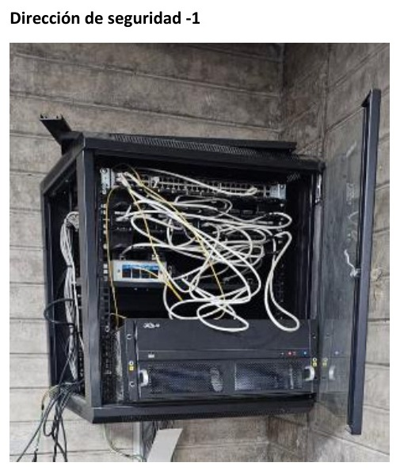
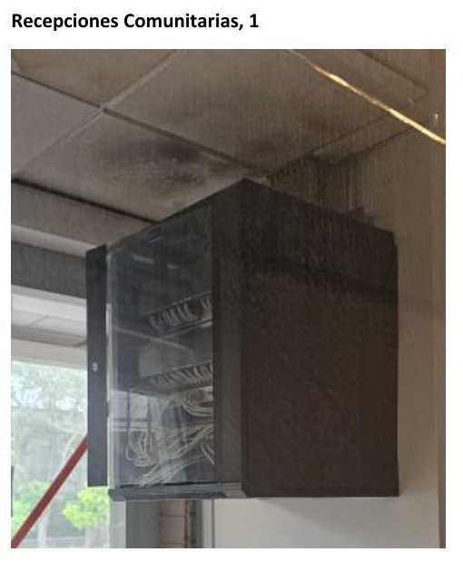
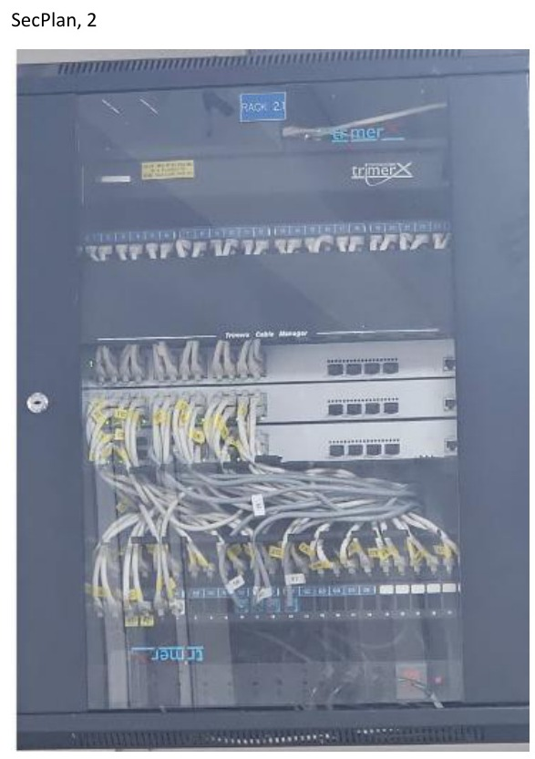
3,5 m en techumbre.